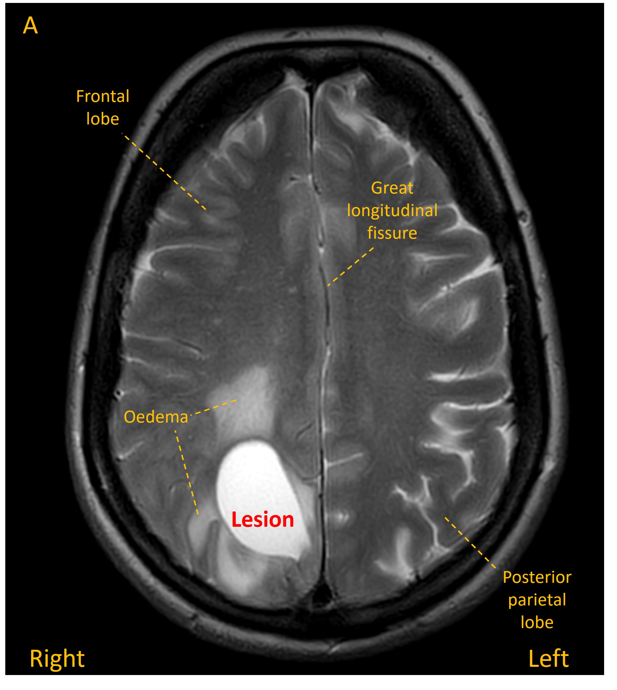
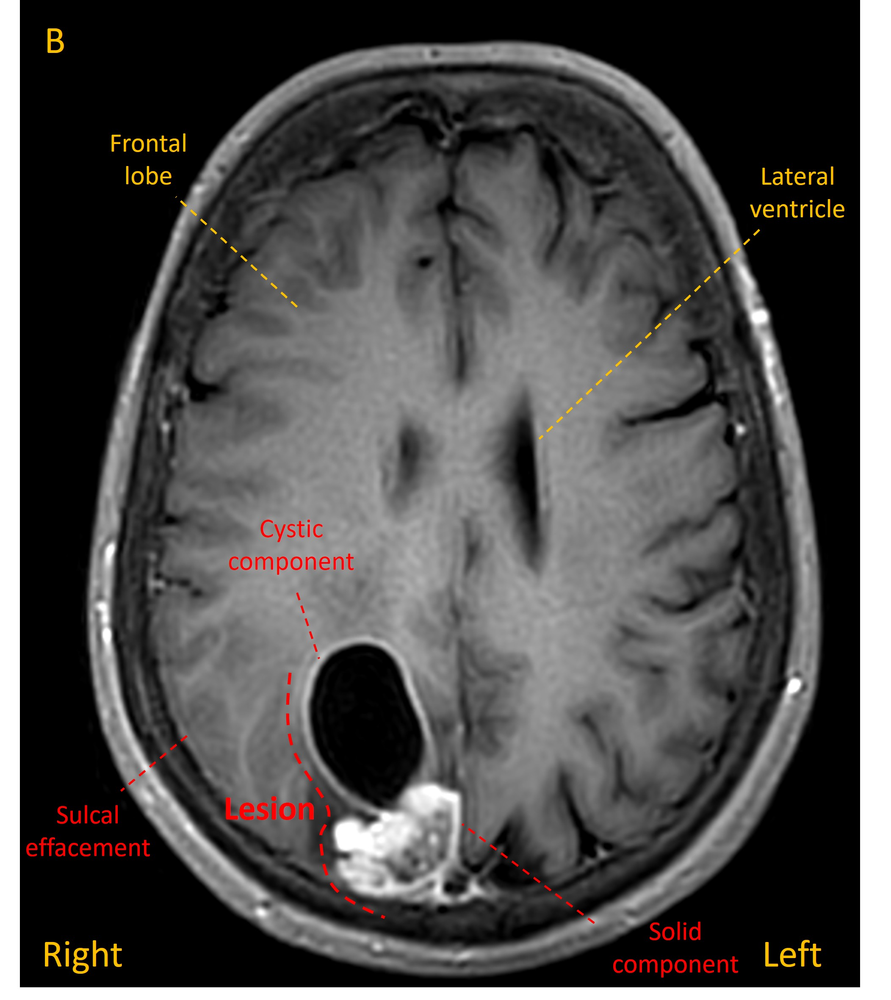
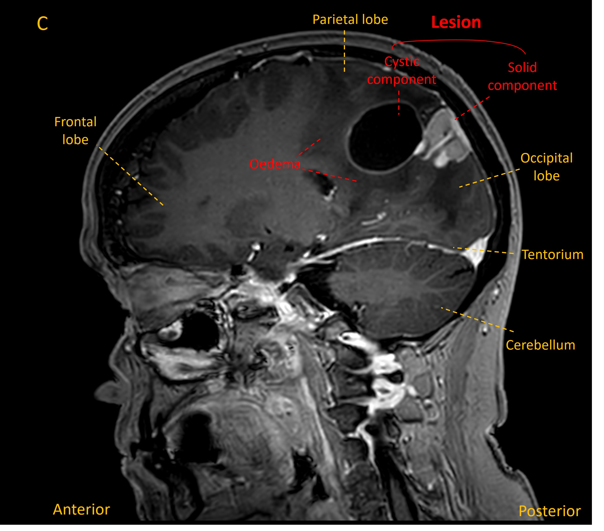

Case 8. Bumping into things
Outcome
An MRI revealed a mass in the right parietal lobe with a solid component and a deeper cyst, associated with some white matter oedema and some sulcal effacement (images A-C).



Body imaging was unremarkable with no evidence of metastasis.
She underwent surgical debulking of the lesion. Pathology confirmed breast cancer metastasis.
She was treated with steroids, radiotherapy and chemotherapy on a palliative (life-prolonging but not curative) basis.
Unfortunately the disease was progressive and she passed away 3 years after presentation.
Final diagnosis
Left homonymous inferior quadrantanopia due to right parietal breast cancer metastasis, affecting superior radiation - managed palliatively.
Key pointsReturn to Cases